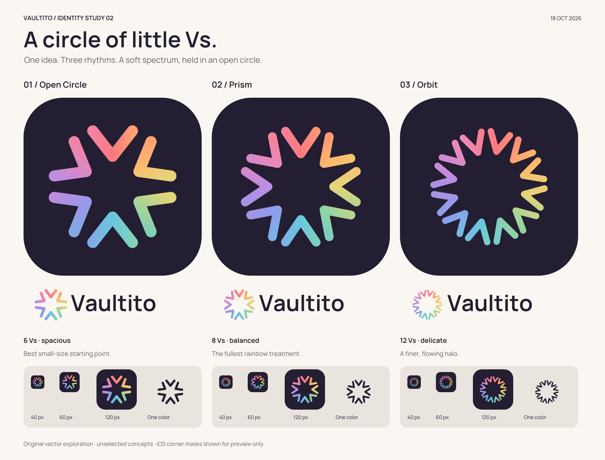
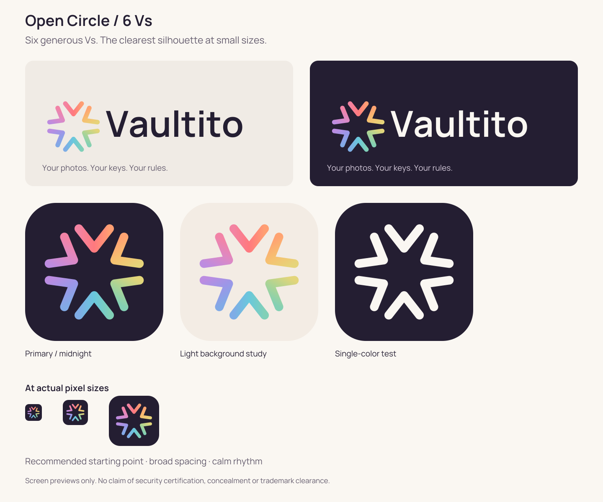
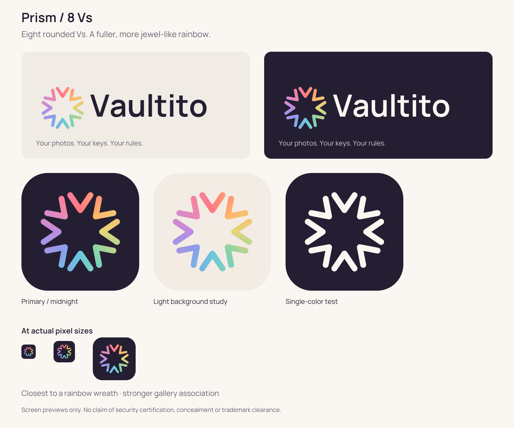
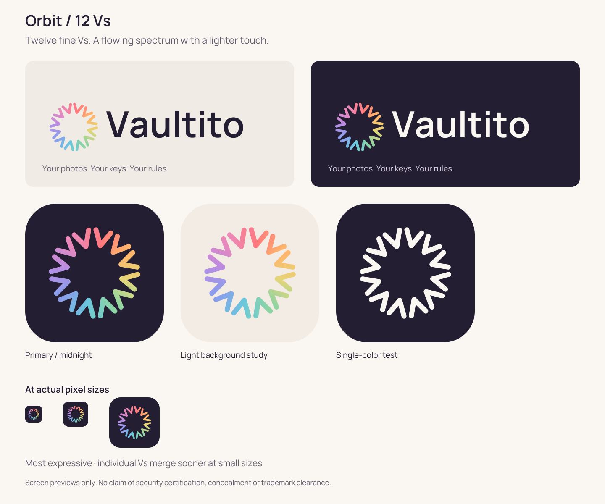
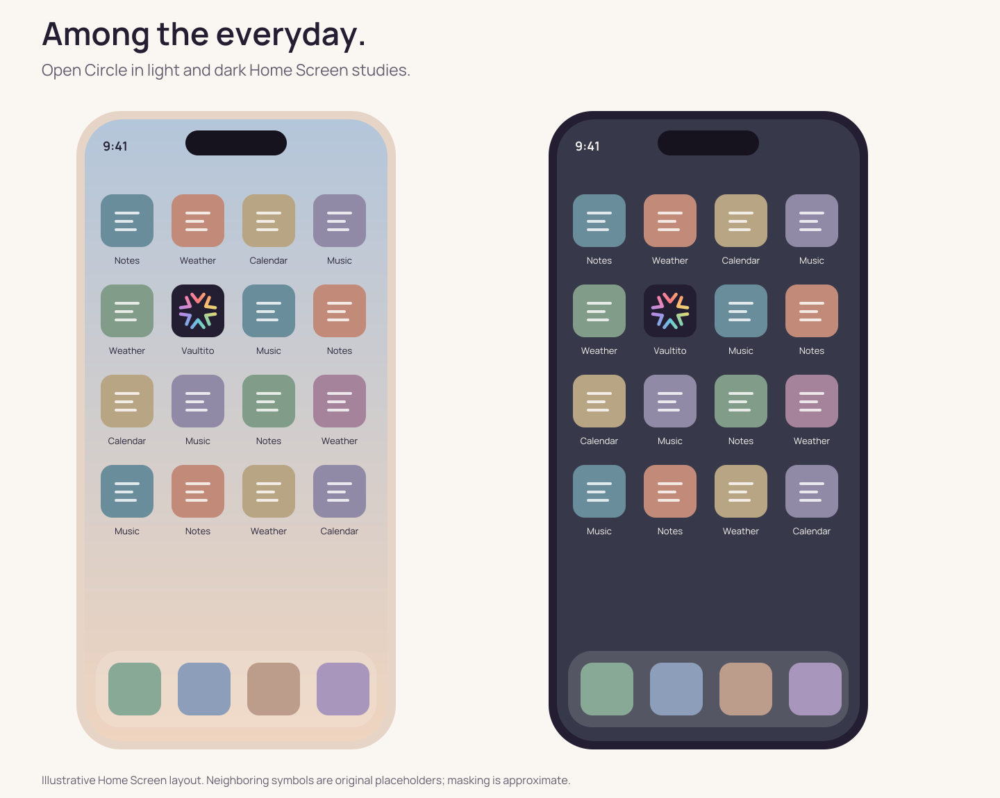
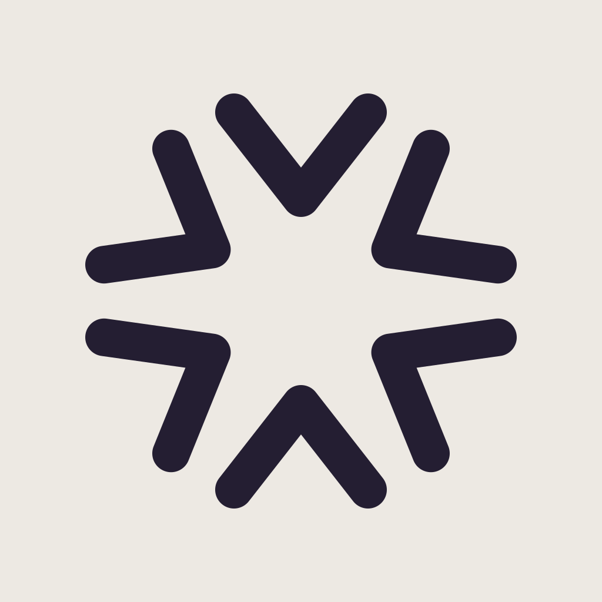

Vaultito · October 18, 2026 · Exploration 02
A circle of little Vs.
Your new direction: a circular ombré rainbow of Vs. Each separate V points toward an open center. Neighboring hues blend across each mark, creating a continuous color journey without transparent overlapping petals.

October 19 review: revise before release. Close rainbow-chevron and inward-arrow ring references were found at Vivid Photo Visual and ConvergeHub. These concepts are not cleared. Open Circle remains the clearest small-size study, but the family needs further differentiation. Read the findings and search limits.
Open Circle 6 Vs
Six generous Vs. The clearest silhouette at small sizes.

Editable symbol SVG · Outlined logo SVG · 1024 PNG icon
Prism 8 Vs
Eight rounded Vs. A fuller, more jewel-like rainbow.

Editable symbol SVG · Outlined logo SVG · 1024 PNG icon
Orbit 12 Vs
Twelve fine Vs. A flowing spectrum with a lighter touch.

Editable symbol SVG · Outlined logo SVG · 1024 PNG icon
Everyday context

A quieter option
Chalk removes the rainbow entirely: the same six-V construction, rendered as a single ink color on warm gray. It is a candidate monochrome alternate, not a concealment feature.

Download square 1024 PNG